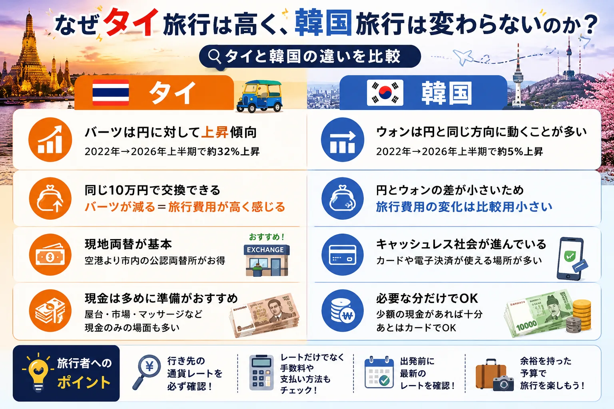
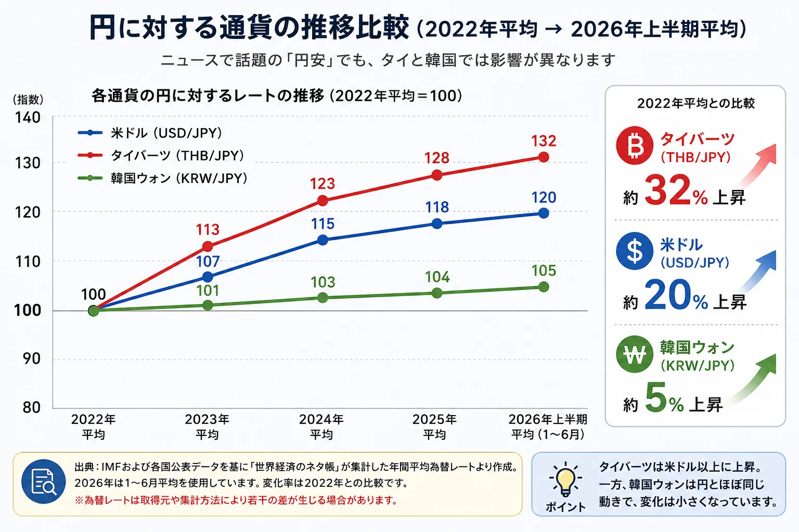
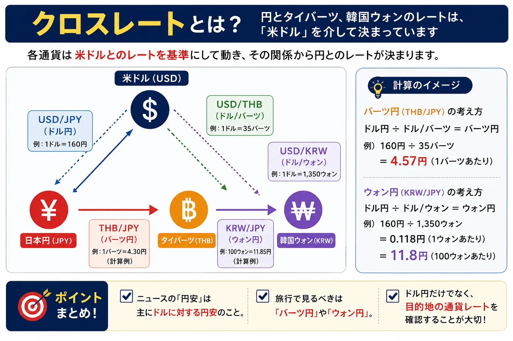
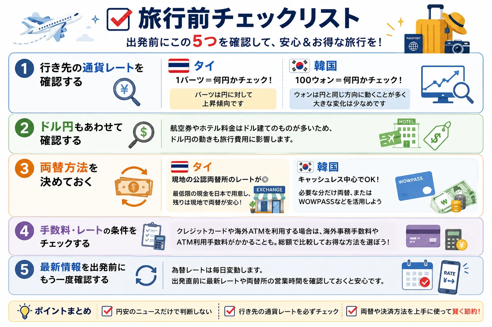

円安なのにタイ旅行は高い？韓国旅行は変わらない？
「1ドル＝160円」
ニュースでは毎日のように「歴史的な円安」という言葉を耳にします。
そのたびに、「タイ旅行も韓国旅行も、昔よりかなりお金がかかるようになったのでは？」と感じる方も多いでしょう。
しかし、実際の為替データを見ると、タイと韓国では事情が異なります。
結論から言うと、韓国旅行は、円安のニュースほど旅行費用への影響は大きくありません。タイ旅行は、近年タイバーツが円に対して上昇しており、以前より多めの予算を考えておく方が安心です。
つまり、「円安＝すべての海外旅行が同じように高くなる」わけではないのです。
その違いを理解するためには、「ドル円」だけではなく、旅行先の通貨と円の関係を見ることが重要になります。
この記事では、円安とは何か、なぜタイと韓国で差が生まれるのか、旅行前に本当に確認すべき為替レートを、最新データをもとにわかりやすく解説します。

そもそも「円安」とは何を意味するの？
まず知っておきたいのが、ニュースで報じられる「円安」は、多くの場合米ドル（USD）に対する円安を指しているということです。
例えば、1ドル＝100円から1ドル＝160円になれば、同じ1万円で購入できるドルは大きく減ります。
これが一般的に言われる「円安」です。
しかし、旅行で使うのはドルではありません。
タイへ行くならタイバーツ（THB）、韓国へ行くなら韓国ウォン（KRW）です。
そのため旅行者が本当に確認すべきなのは、1バーツ＝何円、100ウォン＝何円という、日本円との直接レートです。
ここを見落としてしまうと、「ニュースでは円安なのに、旅行費用は思ったほど変わらない」あるいは「ニュース以上に旅行費用が高くなっている」という違いが生まれます。
最新データで見ると、タイと韓国では大きな違いがある
2022年の年間平均レートと、2026年上半期（1〜6月）の平均レートを比較すると、次のような傾向が見られます。

| 通貨 | 2022年→2026年上半期 |
|---|---|
| 米ドル（USD/JPY） | 約20％上昇 |
| タイバーツ（THB/JPY） | 約32％上昇 |
| 韓国ウォン（KRW/JPY） | 約5％上昇 |
グラフを見ると分かるように、韓国ウォンは円と比較的似た方向へ動いており、円との価格差は大きく開いていません。
一方でタイバーツは、この期間の比較では米ドルを上回る上昇幅となっています。
その結果、2022年と比べると、同じ10万円でも交換できるバーツは以前より少なくなっています。
つまり、タイでホテルや食事の価格が変わっていなくても、日本円から見ると旅行費用が高く感じられるという状況になっているのです。
※グラフの見方：出典は上記キャプションの通りです。2026年は1〜6月平均を使用しています。変化率は2022年年間平均との比較です。なお、為替レートは取得元や集計方法により若干の差が生じる場合があります。
「タイは円安の影響を受けにくい」は今も本当？
以前は、「タイは円安でも旅行費用はそれほど変わらない」と言われることがありました。
これは当時の状況としては間違いではありません。
その理由は、日本円がドルに対して下落しても、タイバーツもドルに対して同じように下落する場面が多く、結果として円とバーツのレートが比較的安定していたためです。
しかし近年は状況が変化しています。
期間比較では、タイバーツは円に対して上昇傾向が続いており、以前よりも同じ日本円で交換できるバーツは少なくなっています。
そのため、「数年前と同じ予算で十分」とは言い切れなくなっています。
旅行を計画するときは、過去の経験だけに頼るのではなく、最新のバーツ円レートを確認して予算を組むことが大切です。
なぜタイバーツは円に対して上昇しているのか
「円安だけが原因ではない」とすると、なぜタイバーツは以前より高くなっているのでしょうか。
実は、一つの理由だけではありません。
複数の要因が重なった結果、旅行者が感じる「タイ旅行の値上がり」につながっています。
理由① タイバーツ自体が強い動きを見せた時期がある
タイは1997年のアジア通貨危機以降、管理フロート制を採用しています。
これは、市場で為替レートが決まる一方、急激な変動が起きた場合には、タイ中央銀行（Bank of Thailand）が市場介入を行い、為替の安定を図る仕組みです。
そのため、タイ中央銀行は「特定の為替レート」を維持することではなく、為替相場の急激な変動を抑えることを目的として市場介入を実施しています。
近年も、急速なバーツ高やバーツ安による経済への影響を抑えるため、為替市場への介入が報じられています。
つまり、「バーツ高を目指している」わけではなく、輸出企業や観光業を含めた経済全体への影響を小さくするために、相場の安定化を図っているというのが正しい理解です。
理由② 円安とバーツ高が重なった
旅行者が最も影響を受けるのはここです。
例えば、円だけが安くなれば、タイバーツも同じように安くなれば、旅行費用への影響はそれほど大きくありません。
しかし近年は、期間比較で見ると、円はドルに対して下落し、タイバーツは円に対して上昇するという動きになっています。
その結果、同じ10万円でも交換できるバーツは以前より少なくなっています。
そのため、ホテル料金や現地の物価が大きく変わっていなくても、日本円から見ると旅行費用が高く感じられるのです。
理由③ 観光需要の回復も一因と考えられている
新型コロナウイルス流行後、タイには世界中から旅行者が戻り、観光業も回復傾向にあります。
もちろん、「観光客が増えたからバーツ高になった」という単純な話ではありません。
為替は、金融政策、金利差、貿易収支、海外からの投資、世界経済など、多くの要因によって決まります。
その一方で、観光収入の回復はタイ経済を支える重要な要素の一つであり、バーツ相場を下支えする材料の一つと考えられています。
つまり、観光回復だけが理由ではありませんが、複数ある要因の一つとして見るのが適切です。
韓国旅行はなぜ影響が小さいのか
一方で、韓国旅行は円安のニュースほど大きな影響を受けていません。
その理由は、韓国ウォンが日本円と比較的似た方向へ動くことが多いためです。
日本と韓国は、製造業中心、輸出依存型経済、米ドルの影響を受けやすいという共通点があります。
そのため、米ドルが強くなる局面では、円もウォンも同じ方向へ下落するケースが少なくありません。
結果として、円とウォンの差が大きく開きにくくなります。
ただし、円とウォンが常に同じ動きをするわけではありません。政治情勢や金融政策、市場環境によって異なる値動きをすることもあります。
それでも長期的な期間比較では、円との価格差は比較的小さく、2022年から2026年上半期までの比較では約5％程度の変化にとどまっています。
そのため、「歴史的円安」と報じられていても、韓国旅行では「思ったより予算は変わらなかった」と感じる旅行者が多いのです。
韓国旅行ではキャッシュレスを活用しよう
韓国では、クレジットカードや電子決済が非常に普及しています。
コンビニやカフェ、地下鉄、タクシー、ショッピングモールなど、ほとんどの場所でキャッシュレス決済が利用できます。
そのため、大量のウォンを日本で両替して持って行く必要はありません。
必要になった分だけ現地で両替したり、WOWPASSなどのサービスを利用したりする方が、余った現金を抱えるリスクも少なくなります。
なお、クレジットカードや海外ATMを利用する場合は、為替レートに加えて各社所定の海外事務手数料やATM利用手数料が発生することがあります。利用前にカード会社やATMの手数料を確認しておくと安心です。
クロスレートとは？旅行者が本当に見るべき為替レート
ここまで読むと、「結局、旅行前には何を確認すればいいの？」と思う方もいるでしょう。
そこで知っておきたいのが、クロスレートという考え方です。
少し難しそうに聞こえますが、旅行者にとっては非常に重要なポイントです。

例えば、タイバーツと日本円のレートは、実際には米ドルを介して決まることが多く、基本的な考え方は次のようになります。
USD/JPY ÷ USD/THB = THB/JPY
韓国ウォンも同様です。
USD/JPY ÷ USD/KRW = KRW/JPY
つまり、ニュースで「ドル円」だけを見ても、旅行費用まで正確に判断することはできません。
例えば、ドル円が大きく動いていても、タイバーツや韓国ウォンも同じ方向へ動いていれば、旅行費用への影響は限定的になります。
逆に、タイバーツのように円より強い動きを見せる期間では、円安の影響以上に旅行費用が高く感じられることもあります。
※実際の外国為替市場では複数の取引ルートがありますが、旅行で為替の仕組みを理解するうえでは、この式で考えると分かりやすくなります。
旅行前には、ニュースの「円安」という言葉だけではなく、「1バーツ＝何円」「100ウォン＝何円」という目的地の通貨レートを確認する習慣をつけることが大切です。

タイ・韓国旅行で見るべき為替レート
旅行前にチェックしたいポイントをまとめると、次のようになります。
| 行き先 | 確認したいレート | ポイント |
|---|---|---|
| タイ | 1バーツ＝何円 | 円に対するバーツの動きを確認し、少し余裕を持った予算を組む |
| 韓国 | 100ウォン＝何円 | 円との価格差は比較的小さいため、大きな変化がないか確認する |
| 共通 | ドル円 | 航空券やホテル料金への影響を把握する参考になる |
ニュースでドル円だけを見て判断するよりも、旅行先の通貨を見る方が、実際の旅行費用をイメージしやすくなります。
タイ旅行で両替するなら日本？現地？
為替レートだけではなく、どこで両替するかも旅行費用に影響します。
一般的には、日本の空港や銀行よりも、タイ現地の公認両替所の方が良いレートで両替できるケースが多くあります。
そのため、現地到着後の交通費や食事代など最低限の現金だけ日本で準備し、残りは市内の両替所で交換する旅行者も少なくありません。
ただし、レートは毎日変動します。
旅行前には最新レートを確認し、到着時間や両替所の営業時間も考慮して計画を立てましょう。
なお、クレジットカードや海外ATMを利用する場合は、為替レートだけでなく、海外事務手数料やATM利用手数料が発生する場合があります。
総額で比較して、自分に合った方法を選ぶことが大切です。
タイの両替方法は、タイ旅行の両替は日本と現地どっちがお得？やタイでおすすめの両替所5選もあわせて確認してください。
韓国旅行はキャッシュレス中心でも困らない
韓国は世界でも有数のキャッシュレス社会です。
コンビニ、カフェ、レストラン、地下鉄、タクシー、ショッピングモールなど、ほとんどの場所でクレジットカードや電子決済が利用できます。
そのため、旅行中に大量の現金を持ち歩く必要はありません。
屋台や市場など現金しか使えない場所もありますが、必要な分だけ現地で両替するか、WOWPASSなどのサービスを利用すれば十分対応できるでしょう。
まとめ｜「円安」だけで旅行費用は判断できない
「円安」と聞くと、海外旅行はすべて高くなったように感じてしまいます。
しかし、実際には旅行先の通貨によって影響は大きく異なります。
今回のポイントをまとめると、ニュースの「円安」は主に米ドルに対する円安を指しており、タイ旅行では期間比較で見るとタイバーツが円に対して上昇しているため、以前より予算に余裕を持つと安心です。
一方で、韓国ウォンは円と比較的似た動きをしているため、旅行費用への影響は比較的小さくなっています。
旅行前は「ドル円」だけでなく、「バーツ円」「ウォン円」のレートも確認することが重要です。
両替方法や決済手段を工夫することで、旅行費用を抑えられる可能性もあります。
旅行の予算を考えるときは、ニュースの見出しだけではなく、「行き先の通貨は今どう動いているのか」を確認してみてください。
それだけで、旅行準備はぐっと現実的になり、不安も減らせるはずです。